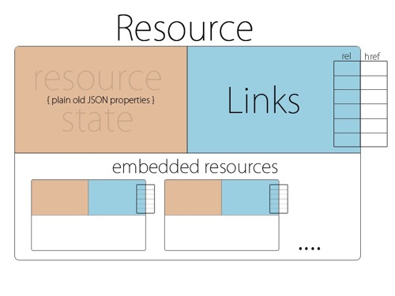
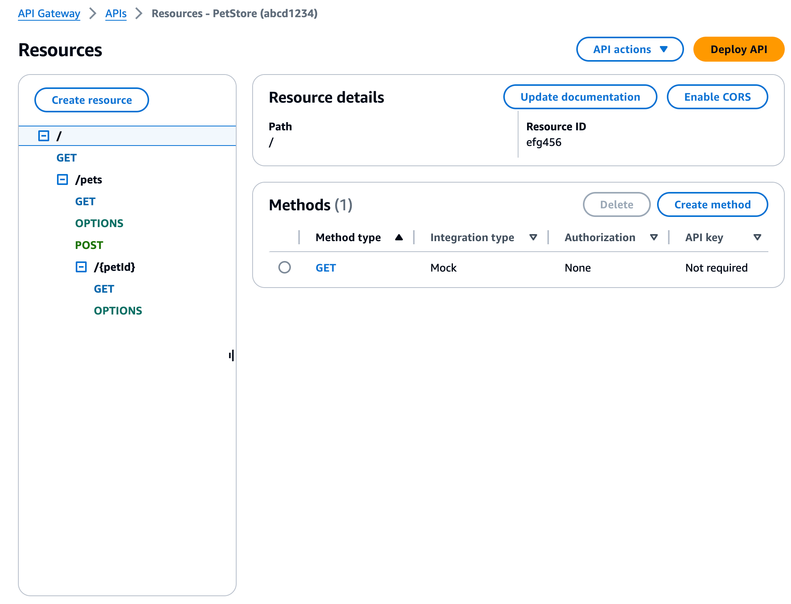

RESTful 资料归集
资料归集
- Google Cloud API Design Guide
- github的 restful api
- restcookbook.com
- 开发 REST 应用
- 微观 SOA：服务设计原则及其实践方式（上篇）
- 微观 SOA：服务设计原则及其实践方式（下篇）
- 《【REST系列】详解REST架构风格 —— 带你阅读Web发展史上的一个重要技术文献》
REST 十诫
FROM：REST 十诫
本文最初发表于 Treblle 网站，经原作者 Vedran Cindrić 授权，InfoQ 中文站翻译并分享。
我在过去十年里，一直在研究的核心内容之一就是 API：从单一客户端使用的简单 API，到多种设备和多种用途的 API。在过去这些年来，我也有机会与很多第三方 API 一起工作，比如 Stripe、Twilio，以及其他一些不太流行但很有吸引力的 API。这些 API 几乎都以 REST 为基础，有些地方是独一无二的。
REST 之所以流行，有许多理由可以解释。它易于理解、灵活、适用于各种规模，拥有庞大的社区，以及围绕其构建的各种工具。但是，除此之外，我还要说，许多流行的理由都是源于其最老的竞争对手——SOAP，它实在是太可怕了。如果你曾经使用过或与 SOAP 一起工作过，你就会明白我为什么这样说！它的客户端非常糟糕。客户端非常糟糕，人们可以随心所欲地使用 XML，它非常烦琐，有时候授权也非常奇怪……幸运的是，JSON 和 REST API 在这一战中获胜。
另一方面，还有一些更新的、更现代的参与者，尝试着从基于 REST 的 API 中获得一些关注。当然，我指的是 GraphQL。GraphQL 也是以 JSON 为基础，共享了 REST 的优势，例如灵活性、性能、可扩展性等。对我个人来说，GraphQL 的两个主要缺点是它是由 Facebook 构建的，并且它把 API 设计过程转移到了客户端。我的意思是，这使得移动开发人员和前端开发人员有责任创建自己特别的 API，并且可以通过数据库进行查询。我不清楚你的想法，但是我觉得这个想法不是最好的主意。别误解我，我热爱移动和前端开发，但是他们在数据库设计、编写查询和构建 API 方面的知识上，也许并没有太多的经验。你也许不会要求你的后端开发人员设计一个应用，让汽车修理师修理飞机，或是请兽医为人类进行手术。他们能做到吗？或许，他们有可能。他们应该这么做吗？不，我不这么认为。
依我看，REST 依然是丛林中的王者，不会轻易被打倒。REST 的唯一问题在于，归根结底，它既不是标准，也不是协议。相反，它是一套“架构约束”。这是一种不能称之为标准的花哨的方式，但是它却能激起很多人的想象力。他们往往会按照自己的想法去做，或按照自己的（错误）理解去实现这些约束。为了避免这样的误解，我决定把我所认为的 REST API 十条戒律都写下来。遵循这些戒律，你将会从你的移动开发人员那里得到关爱，从后端开发伙伴那里得到敬仰，在 Twitter 拥有摇滚巨星的地位。
因此，正如歌词所唱的那样：“Won’t you follow me into the jungle ?”（你愿意跟随我进入丛林吗？）
1. 要务实
这其实很简单。如果你正在构建 REST API，你应当接受并使用 JSON 进行响应。不要用 XML。不要用别的什么东西。就是 JSON。
没错，JSON 并非“必须的”，因为 REST 并不是一种标准，但这是你要做的事情之一。就好像你每天都要穿衣、睡觉，或者每天都要喝一杯咖啡。好吧，也许不是最后一部分，但你明白我的意思了。我们越早让大家摆脱 XML，转向 JSON，对大家来说就越有利。如果你不知道 JSON 为什么会更好，那就让我随便列举一些理由吧：
- JSON 更容易使用、更容易书写、更容易阅读：任何人，哪怕是你的祖母都能阅读。
- JSON 的速度更快，而且占用的内存空间更少。
- JSON 不需要专门的依赖关系或包来解析它。
- 每一种有意义的程序设计语言都能为 JSON 提供良好的支持。
如果你觉得这还是太过抽象，那么我建议你从互联网上随便下载一个 XML 文件，然后试着对其进行解析。我在 2000 年代的时候已经有过很多次这样的经历，我可以向你保证，你会哭着回到 JSON 那里去。你根本没有理由在 2021 年使用 XML 而不是 JSON。当然，如果你有一个遗留的企业系统，那么我对你的痛苦感同身受，但是即便如此，情况也在改变。越来越多的老旧的大公司不断地对其内部和外部 API 进行升级，包括 XML、SOAP、JSON、REST 等。
JSON 不应该只在响应端使用，也应该在请求端使用。所以，不要使用 form-data 或 x-www-form-urlencoded 来发送数据，而是要使用 JSON 来发送。这使得阅读、写入、测试和管理都变得更加简单。
记住，在不确定的情况下，请使用 JSON。我们所有开发人员在此都会向你表示衷心的感谢。
2. 有条理
你一定不会相信，我已经见过很多次 API 只使用 GET 方法来做从数据存储到过滤的所有工作。作为一名开发人员，你必须一直努力了解所使用的工具，因此，当你在开发 API 时，一定要知道 HTTP 的工作原理。每一种 HTTP 方法都是特定的情况而设计的。让我们分别看一下，然后再决定何时应该使用它们。
在我们开始之前，先做一个小而有趣的澄清。在描述 HTTP 方法时，人们经常使用“safe”和“idempotent”这样的词。这些词听起来很好，也很神秘，但其实没那么复杂。用简单的英语来说，safe 意味着只需准备好。你可以在不需要担心更新、破坏或改变数值的情况下，向这个端点发送请求。而 idempotent 则意味着你可以向同一个端点发送多个请求，而不会改变任何内容或获得不同的结果。通常，所有的 safe 方法同时也是 idempotent，但是并非所有的 idempotent 都是 safe。我知道一开始你会感到迷惑，但是我们会在后面说明。
GET 方法
当希望读取数据时，你应该使用 GET 方法。该方法不是存储，不是更新，也不是改变数据。它只读取数据。这是一个非常简单的概念，任何人都不应感到困惑。我们知道，GET 方法只能用来读取数据，并且每次都会返回同样的数据。我们可以说，GET 请求是安全的，也是可执行的。
POST 方法
当你发出 POST 请求时，全世界每个人都想让你存储一些信息。这意味着你将在数据库创建一个新行，在某处写点什么，或者从无到有创造一些东西。如果你愿意的话，你可以使用多种内容类型将数据发送到 POST 方法：multipart/form-data 或 x-www-form-urlencoded 或 raw（application/json，text/plain等）。当构建 REST API 时，我推荐客户端以 application/json 的形式发送数据。这样我们就能保持一致，符合 JSON 精神，而且发送 JSON 数据可以让你轻松地做出真正复杂的请求。最后，POST 操作是不安全的，因为它们的确会在服务器端改变一些东西，而且它们也并非无所不能，因为向同一个端点发出两个请求会导致不同的资源。
注释：如果 POST 是幂等的，它在一定程度上就是安全的了。
PUT 方法
PUT 请求最常被用于更新的场合。它也可以用于创建新的记录，但当时的设想是，客户端必须是一个 ID，为新的资源定义了一个 ID。所以，要让你的工作更加简单，在你需要更新一个资源时，请简单地使用 PUT。PUT 显然并非安全的操作，因为它在服务器端做了改动，不过，你会很喜欢，它是 idempotent 的操作。
DELETE 方法
我想说的是，没有必要对这个操作进行任何说明。如果要删除资源，就直接使用 DELETE 方法。这个操作肯定不安全，但是有些人说它是 idempotent，也有些人说不是。
PATCH 方法
PATCH 请求用于再次更新资源，但与 PUT 不同的是，它只需要更新改变的数据，而 PUT 能够并且应当对全部的资源进行更新。这是不安全的，也是不可行的。
既然我们已经了解了基础知识，那么接下来就是实际生活中所发生的事情。大部分人都是用 GET、POST，还有一些人使用 PUT 和 DELETE。我几乎没有见过有谁在用 PATCH。我推荐你使用一切可用的 HTTP 方法，因为这就是它们的目的。你可以把所有的 CRUD 操作映射到 POST、GET、UPDATE 和 DELETE。我只想让你别用 GET 来创建或更新数据。请不要这样做！
3. 重语义
这也许是你唯一一次听到我对别人建议，要注重语义。但是，在这种情况下，这个问题很重要，并且涉及正确命名的问题。我经常会在 API 文档中发现一些可怕的命名约定。我认为，每个优秀的 REST API 都应该能让一般人容易理解。从端点名称到输入参数，再到 JSON 键。
所以让我们从 API 端点开始。规则也非常的简单：
不要用动词，而是用名词。注释：如果要用动词，只在子路径的一部分用动词。
用复数替代单数。
之所以要使用名词，是因为当你进行 HTTP 请求时，就像我们前面提到的，你使用的是动词。每个 HTTP 方法（GET、POST、PUT、PATCH）在英语中都是一个动词。所以，用双重动词就没有任何意义了，对吧！如果你将 API 端点命名为 /getUsers，并且你在进行一个 GET 请求来查看所有的用户，那么你读这个语句的时候会觉得很有趣。GET /getUsers。没有意义。
我经常见到的另一种常见情况是用单数而不是复数的端点名称。这当然大错特错。你需要 API 的端点保持一致、简单和逻辑性。如果你使用了复数，你可以为每一种 HTTP 方法提供同样的 URI。如果你做的是 GET /users，那么你将会把所有的用户都列出来，而你在做 POST /users 时，你就会创建一个用户。因此，同样的 URI，使用不同的 HTTP 方法（动词）。更酷的是，你可以请求GET /users/:id 来获取信息，以便了解更多的细节。所以，就像你所见：它仍然是相同的起始资源名称，只不过有了更多的深度。假如你使用单数，那么 GET /user 表示你想要拥有一个用户，并且你还需要在其他场合中使用更多的 URI。复数就更有意义了。
回过头来，让我们来看一些良好的示例和糟糕的示例，这样我们就能 100% 地了解了。
良好的示例：
- GET /users
- POST /users
- GET /users/23
- PUT /users/23
- DELETE /users/23
- GET /users/23/comments
槽糕的示例：
- GET /user/23
- GET /listAllUsers
- POST /user/create
- PUT /updateUser/23
- GET /userComments/23
我认为你对这种观点有了一定的了解。这真的非常简单，通过以上示例你可以了解哪些听起来不错，更有意义。
还有一点关于端点命名的补充说明：尽量使用单个单词而不是多个单词。如果你一定要使用多个单词，那么在它们之间使用连字符。看在老天爷的份上，在 URI 中使用所有的小写字母。
作为本节的总结，我将简单地介绍一下 JSON 键在请求和响应数据中的命名规则。对于这一问题，存在着大量争议，特别是考虑到有三种可能的情况：camelCase（驼峰式大小写）、snake_case（蛇形命名法） 和 spinal-case（脊柱命名法）。同样，没有人可以阻止你使用其中任何一种，从理论上讲，你是不会出错的。不过，我推荐使用 snake_case。为什么？Stripe 使用它。PayPal 使用它。Facebook 也使用它。你知道吗？就我个人而言，我发现这样我们就可以 100% 地弄清楚了：因为更容易阅读，这就是为什么我们所有的 API 都使用 snake_case。还有一些类似的研究显示，snake_case 在可读性上要优于 camelCase。
注释：这要求我们对 Jackson 做专门的配置。
4. 保安全
我就直截了当地说：如果你在 2021 年没有使用 HTTPs，那么你就太可耻了。你的 REST API 应该在 HTTPs 上运行，不会有任何问题。使用 HTTPs 只是提供了一个 HTTP 所没有的安全元素。它使你的用户免受中间人攻击，并对客户端和 API 之间的通信进行加密。苹果、谷歌等其他大公司不久就会强迫你启用 HTTPs。最重要的是，如今你可以免费获得一个 SSL 证书。可以通过亚马逊云科技和 Rout 53 等类似的服务，也可以通过类似 Azure 或者 Let’s encrypt 的服务来实现。它们都很好用，我可以亲自证明这一点。你还可以随时购买一个高级 SSL 证书。不管你怎么做，只要将 HTTPs 用于你的下一个 API。你以后会感谢我的。
另外一件令我非常伤心的事就是，我发现一个 API 不需要任何形式的授权。如果你创建了 API，你可以简单地控制哪些人可以访问。这是非常容易的，但是很多人并没有这么做，因为他们觉得实施、使用和维护都非常的烦琐。其实大可不必。你可以先用不记名的令牌来开始，这个设置只需要 2 分钟即可完成。即使你不想要，也不必将其与数据库相连。如果你愿意，你可以转而使用 JWT 或者 oAuth 等更为成熟的解决方案。你应该需要某种认证解决方案是有许多理由的。首先，你可以控制 API 的访问权限和用户能够访问的数量。如果有问题，例如你的 API 被垃圾邮件、黑客攻击，或者其他，你只需关闭被公开的密钥。你也可以使用 API 密钥来跟踪 API 的集成情况，看看有没有用户过度调用 API，或者客户端的行为不正常。最终，你还可以通过 API 调用来收集客户端、用户和 API 的统计数据。
我的观点是：把 API 当作自家房子来看待。我敢肯定你有几扇有钥匙的房门，而你只是将这些钥匙交给了重要的人。对待你的 API 也应该一样。
另外，你还需要注意的是，在网络上发送超级敏感的数据。我们讨论了这个问题，并讨论了 SSL 用于通信加密的重要性。这将是第一步。第二步是，不要传回那些可能不会在你的应用或者你的网站上使用的敏感数据。我指的是用户地址、电话号码、SSN（译注：美国社会保险号）或者其他形式的身份认证。如果不用，就不要传回。如果你使用了，那么就要保证访问 API 和得到响应的人是你正在传回数据的真正用户。我知道，这听上去很简单，但是实际上，人们会做出很多疯狂的事。这主要是他们觉得“哦，不会有任何事情发生，这只是一个很小的 API，没有人知道。”在这一点上请相信我。人们会发现的，只要你让别人去做，别人就会去做。因此，请别这么做。
在我们结束之前，我要谈谈 UUIDs 与 IDs 之间的辩论。我是 ID 的长期粉丝，因为它更简短，也更快速，但是我认为 UUID 在安全性和隐私优势更加重要。UUIDs 的安全性更高。你可以在数据库中增加自动递增的 ID 列，但如果你将模型公开给 API，则可以使用 UUIDs。这些忠告都是简短的，但是却能帮你省去许多麻烦。
最后我要说的是基本的基础设施安全。如果你使用的是亚马逊云科技或 Azure，那么这就是你的优势。API 网关为你提供了更多的安全性，可以通过防火墙和侦测 DDoS 攻击。你能用就用吧。只要你能阻止某个特定的 IP 或用户，你就会寻找这样的东西。如果你在传统服务器上运行 Apache，下面有两个非常快捷的建议，可以帮助你在接下来的日子里省去很多麻烦。
第一条建议很简单：坚持更新你的软件。Apache、PHP、Composer 包、NPM 包。所有的软件都要更新。一定要保证你使用的软件都是最新的、最好的。
第二条建议，Apache 默认向每一次请求发送一个响应头，它将告知潜在攻击者你正在使用的 Apache 的哪个版本。这个响应头的键称为 server，其默认值可能是这样的：Apache/2.4.1(Unix)。你现在要做的就是迅速地把 Apache 的版本隐藏起来。
只需打开：/etc/apache2/conf-enabled/security.conf，将 ServerTokens 的值设为 Prod。之后，运行 sudo systemctl restart apache2，您将会让您的服务器变得更加安全。恭喜。
当你打开/etc/apache2/conf-enabled/security.conf 时，你可以做的另一件事是关闭 ServerSignature。只要把它设置为“Off”，你将会变得更加安全。
通常情况下，每个季度都应该要召开一次安全会议，讨论如何改进安全、怎样改进，以及怎样保证安全。你不想受到黑客、DDoS 等攻击。你要相信我。
5. 有组织
除了修改 API 的版本之外，还有什么更好的办法来保持组织性呢？我知道你们已经阅读过很多篇关于这一问题的文章，觉得“我的 API 太小，而且只有一位用户在用，因此我不会去使用版本管理。”我曾经和你一样，我以前也是这么干的。我也这么说过。要明智，在 API 中使用版本管理，是你能尽早做出的最佳决策。
我之所以迟迟不进行版本管理，是因为在我看来，在 API 层面上，从 V1 到 V2 的跳跃很少发生。我说的很少，是指技术方面：因此，每年都有一次我会了解到，版本管理对于我而言毫无意义。但是，我这一想法是错误的。当然，大版本跳跃并不经常发生，但当你拥有一个平台或者一个正在使用或者开发中的应用时，你就会做一些小的升级，但是频率会更高。我指的是对模式、数据类型、结构或者流程的每周更新，或者每月更新，这对于那些没有更新应用程序或者其他事情的人是很危险的。为了完成这一切，在你没有启用版本管理的情况下，你在每次完成 GIT 提交时都会大汗淋漓。你不但要确定你的代码没有破坏任何东西或任何人，还要了解某个版本的应用程序的将会如何表现。相信我，这些一点都不好玩。
只需为你和你的团队挑选一个最有意义的版本管理方案。在软件领域里，最普遍的版本管理方案就是：major.minor.patch。在我看来，PATCH 部分有点多，但是你可以选择这个模式。我通常会从 v1.1 开始，然后一直到 v1.9。因此，对于大版本变化来说，你是在改变 API 的核心内容，例如认证、核心模式、流程等等。对于小版本和补丁版本来说，你通常做的就是增加或者删除某些小的特性，以某种方式破坏数据结构或类似的东西。
另外一个令你感到迷惑的问题是，由于有许多途径可控选择，所以你该如何真正地实施版本管理。你可以通过以下方式使用版本管理 URI 路径、请求头、查询参数或内容协商。现在，这些方式各有利弊，但是我推荐使用 URL 的版本管理。它是最有意义的，从许多方面来说，这是最容易理解的。通过更新，可以知道哪些版本在使用，只是从 URL 到指向正确的文档版本。REST APIs 基本上是以 URI 为基础的，我想我们应该保持这一传统，使用基于 URI 的版本管理。这方面的一些例子包括：
- api.domain.com/v1/auth/login
- api.domain.com/v1.2/auth/login
- api.domain.com/v1.4.5/auth/login
- api.domain.com/v2/auth/login
总结一下，尽早开始使用版本管理，你可以在将来避免出现问题，并且可以扩展您的 API。
6. 要一致
你可能听说过这句话。“一致性是将平庸转化为卓越的原因”。无论你相信与否，这句话在生活和 API 设计中都是真的。优秀的 API 的一个特点就是它的一致性。首先，我的目标是资源/模型的一致性，然后是其他领域，如命名、URI、HTTP 代码和类似的。
正如我们现在所知道的，API 可以归结为资源。一种资源可以是任何东西，包括用户、文章、书籍、产品等等。每一种资源都可以包含多个属性、对象或数组。资源是结构化的，基于你在数据库中的数据或其他业务逻辑。你的 API 要取得成功，关键在于保持你的资源响应。你无法将你的端点返回完全不同的资源结构。虽然这听上去很有吸引力，也可能是优化事物的方法，但是你最好不要这么做。实施你的 API 的移动开发人员将遵循你所提供的结构，就如同遵循了《圣经》。如果你在每个端点上发送不同的东西，那么他/她的日子就会很糟糕，没有人希望这样。所以，要尽量总是发送相同的资源结构。如果你没有数据，则将其作为空值，或者对象，或者数据来发送。让我们来谈谈现实，假定我们有“文章”资源，有时候文章可能会有评论，而有时候却没有评论。有时候，加载评论是有意义的，而有时却没有意义。这很好，但是请试着在你的结构方面作出一致的响应。
当你得到一篇文章时，你想加载评论，就像这样：
1 | |
但如果你在下载一系列的文章，或是你刚创建了一篇没有任何评论的文章，那么你应该返回以下内容：
1 | |
因此，如果客户端期望看到一个评论数组，它们仍然会得到它，但它将只是空的。这样一来，你将不会更改你的模型，也不会删除对象/数组。
你只是通过保持一致，就为自己和他人节省了大量的时间。
7. 要优雅
如果你正在构建 API，就不可避免地会发生一些问题。这很好。这也是意料之中的事。你不必因为 API 的错误或问题而感到难过。
如果你的 API 有一个错误或问题，你不应该感到难过。如果您不提供详细信息，并且确保您的 API 比其他任何人都要聪明，那么您应该感到不安。。
从最上面开始，我发现了一个最常被开发人员使用的事情，就是 HTTP 状态代码。如果你不了解，那么 HTTP 的状态代码可以在任何你能想到的情况下使用。你只要知道用哪个，然后再返回到客户端。HTTP 相应状态代码有 50 多种，每一种都有其特殊的意义，需要在特定的环境中加以应用。我将不一一列举，但是我们将列举一些最常用的。我们已经有：
- 信息型响应代码（以 1xx 开头）。
- 成功响应代码（以 2xx 开头）。
- 重定向响应代码（从 3xx 开始）。
- 客户端错误响应代码（从 4xx 开始）。
- 服务器错误响应代码（以 5xx 开头）。
因此，你真的拥有你需要的所有状态。从 OK、未授权、未找到、内部服务器错误到超文本咖啡壶控制协议，所有这些都有。是的，最后一个是一个实际的状态。这就证明了制造 HTTPs 的人是最会开玩笑的人。
无论如何，每个状态都有其意义。这种意义被广泛地接受和了解。所以，无论是中国的开发人员还是德国的开发人员，都会理解，当你发送 401（未授权）的状态时，意味着客户端没有发送正确的认证信息。因为我们响应的状态代码是 401（未授权），所以大家都知道这是客户端故障，必须通过客户端来解决，而非 API。我只是举一个例子，但我的意思是，你应该在适当的情况下使用适当的 HTTP 状态代码。使用它们可以帮助你的 API 得到广泛的理解、一致和标准。虽然 REST 并不是一个标准，但它是你必须遵守的一个标准。
一旦有了 HTTP 的状态代码，我们就必须在遇到困难时给客户提供尽可能多的详细信息。为此，我们需要做许多工作。首先，我们要能预想到 API 的失败，别人会怎么做，哪些事情不会发生，哪些人会违反这些规则。因此，第一步要进行强有力的、严密的数据验证，尤其是在创建内容之前。当你得到数据后，你需要检查这些数据是否有效。这就意味需要检查 ID 是否真实存在，数值是否符合我们的预期，并且可以把它存储到数据库中。完成以上操作，并对相应的状态代码作出响应，将会使你的 API 让人用起来非常愉悦。因此，假定你已经有了一个端点，它接受了 user_id 并获得了用户资料。如果我们应用预测可能发生的事情的策略，我们会做以下的事情：
- 检查请求中是否有 user_id 参数：如果没有，则回应 400 错误请求。
- 检查给定的 user_id 是否真的存在于系统中：如果没有，则以 404（未找到）回应。
- 如果 user_id 返回一个结果，则响应 200（OK）。
正如你所看到的，我们拥有多种故障保险，在所有这些故障中，我们都用正确的、可理解的响应代码进行响应。
最后，一旦我们设置了我们的响应代码，并且预测了 API 可能出现的故障，我们只需要尽可能地表达出来。我知道，对于我们的开发人员而言，这是一件非常困难的事，但是请相信我，这是你能做的最好的事情之一。当事情出错时，REST API 就会有一个通用的错误响应模型。如果我们已经有了这种模型，客户端开发人员就可以依赖于此向用户提供关于哪里出了问题的更详细的解释。那么，让我们来想象一下，有一位用户在自己的手机中发送了一封无效的电子邮件。它以某种方式被传送到 API，API 自然会出发一次确认和错误，并且响应 400（错误请求）。与此同时，API 应当发出一种通用的错误响应模式，使客户端能够将任意或全部的信息显示给终端用户。所以，如果是这样的话，你很有可能会返回一个错误信息：“输入的电子邮件地址无效”。客户端可以读取并将其显示给用户。同样，我们需要确保你能够涵盖所有的问题，包括从验证到服务器的故障。要实现这个目标，我们最好能找到一种适用于各种情景的通用错误模式。我推荐你采用下列方法：
1 | |
JSON 的错误结构非常简单。我们有一个标题和消息，为我们提供了一个大致的方向，很多时候，开发人员并没有把全部的错误信息展示给最终用户。他们可以在 iPhone 中设置一个警报模式，进现实我们的消息或者标题。但是我们还会发送一个错误数组，它可以容纳具有特定信息的特定错误。提供详细的错误信息将有助于你和其他在 API 上工作的开发者了解到底是什么出了问题。即使你没有讲这些信息展示给最终用户，你也可以在你的要求下，或者你正在使用 Treblle 这样的服务，来看到这些信息。
所以一定要记得，你要尽可能去预测更多的问题。提供大量的细节，说明为什么事情会发生失败，即便是没有人使用，并且使用普遍理解的 HTTP 响应代码的语言。
8. 要聪明
这是一个更具哲理的问题，但是我认为，这是优秀的 REST API 的支柱之一。假如你想想 API 在现代平台、服务或应用程序中的作用，那么我们可以说 API 是整个操作的大脑。理由是，你可能拥有的每一个客户端（iPhone 应用、安卓应用、网站、物联网设备）都会与同一个 API 对话。这意味着我们的 API 在整个生态系统中起着举足轻重的作用，我们的 API 会解决所有问题。如果我能再加一句，那就是优雅。
一个聪明的 API 首先要做的就是保护自己最有价值的资源——数据库。这意味着它应该对数据库进行净化、清理，并防止任何不良数据进入数据库。要做到这一点，一定要确认你从应用向客户端发出的一切，并且排除一切看上去不合适的东西。但我们在拒绝某些东西时，也要给用户一个清楚的原因，让他们明白为什么会这样，或者为什么在这种情况下没有发生。
任何优秀、聪明的 API 都能独立处理复杂的流程，而非依靠客户端。最简单的例子是，将一个用户注册到你的应用中。对于所有的客户端，这应该是一个 API 调用。但在后端，API 可以处理所有可能的后勤工作：在 MailChimp 通讯上注册该用户，向 Firebase 存储推送令牌，向用户发送欢迎邮件等等。客户端段不应该为这些事情调用多个 API 端点。如果我们把所有东西都打包到一个端点，那么你就可以很容易地在任何时间点改变流程，而客户端根本无需察觉。API 能够始终对整个商业逻辑和流程进行全面的控制，只要你能从它们那儿获得所需的数据。
请确定 API 是否经过了优化以满足跨平台的需求。当你处理多个平台或设备，如 iPhone、安卓手机、电脑、电视和类似设备时，API 应该能够适应它们。这就意味着 API 必须具有足够的灵活性，以应对可能与其他客户端的不同输入，同时也可以让客户端继续工作。这方面一个很好的例子就是，可调节尺寸的照片，如果你有一个 API，可以提供照片的内容，那么你也许不会希望将 4000x4000 像素的图片发送到手机上，但是你可以将它发送到电视或者网站上。一个聪明的 API 会知道哪个客户端在访问这个端点，并会返回它自己的优化资源，甚至允许客户端请求特定的尺寸。这样的例子还有很多，不过你会明白的。
尽可能减少客户端的依赖性。一个聪明的 API 总是会把客户端的缺陷考虑进去，并且尽量改正。
9. 须简练
如果 API 不能迅速地进行优化，那它算得了什么？API 不能成为整个生态系统的痛点。就这么简单。有许多方法可以保证你的性能和扩展性都是优秀 API 所应有的。让我们看一下其中的一些。
快速和优化始于数据库层面。每当我听到有人说他们的 API 很慢时，十有八九与数据库有关。数据库设计不佳、查询复杂、基础设施迟缓、缓存不足。你应当总是对数据库结构、查询、索引以及其他与数据库交互作用的所有内容进行优化。当你完成了这一任务之后，接下来要做的就是保证你能够尽可能地提供高速缓存的数据。有时候，缓存数据库查询会使你的加载时间缩短 100%。所以，假如你有 API 端点，可以向用户展示他们的个人资料或者类似的内容，我敢肯定，它不会在每 5 分钟改变。聪明一点，把数据缓存起来。你的用户和调用这个 API 的客户端将会很高兴。
另外一个影响性能的因素是，你将大量的数据通过 API 下发到客户端。一定要保证你的资源和模式只能转回客户端需要的数据，而非全部数据。如果你要返回一个项目的集合，可能你并不需要完全了解模式细节，以及它们之间的关系——每次都是如此。如果这样会加快进度，就这么办。但始终要努力与响应中返回的模型保持一致。这意味着，如果你不加载关系，就返回一个空数组，如果你不加载计数，就返回 0，等等。在建立优秀的 REST APIs 时，一致性是关键。
你可以做的另一件非常简单的事情是启用压缩，以减少响应大小并提高性能。最流行的是 Gzip 压缩。在 Apache 上，它默认启用了一个叫做 mod_deflate 的模块。当启用时，你通常可以看到一个响应头的 Accept-Encoding 设置为 gzip、compress 之类的。尽管它是默认启用的，你仍然需要将它“应用”到你的 API 响应中。要做到这一点，我们必须在我们的默认 Apache 配置中添加一些规则。因此，让我们实际打开配置文件，像这样：sudo nano /etc/apache2/conf-available/000-default.conf并添加这个美丽的东西。
这告诉 Apache 对各种 mime 类型应用 Gzip 压缩，如 application/javascript、application/json 和其他。一旦我们保存了这个，我们只需要通过输入 sudo systemctl restart apache2 来重启 Apache，我们就完成了。你的 API 响应现在比以前小了50~75%。这有多简单啊！？
10. 要周到
最后这一块我就不多说了，因为我们在 REST 方面已经做得太多了（永远不会过时😀），但我不打算降低这个问题的重要性。开发 API 的过程对我们的后端开发人员是很寂寞的。这基本上就是你，一大堆代码和你喜爱的测试工具。当你完成最后一行代码，并把它与生产分支合并的时候，你也许会举的工作已经结束了。但事实并非如此。对于其他许多人来说，旅程才刚刚开始。
有许多人只是等你把工作做完了再去干。要想让他们更好地工作，你就必须在很多方面对 API 进行充分的准备。你要保证这个功能有效，文档很好，而且你还得做好了提供集成支持的准备。无论你的文档编写的多么出色，在集成过程中和集成后都会出现问题、困惑和难题。
设身处地为他人着想，尽量让他人的工作更加轻松。构建一个良好的 API，遵循我们在这里定义的规则，编写优秀的文档，服务于他人。
考虑一下这些工具，这些工具可以帮助你解决很多构建、传输和运行 API 的问题，这些问题都很有挑战性。这些工具之一就是，你猜对了，Treblle。只要把 Treblle 添加到你的 API 中，你就可以得到自动生成的支持 OpenAPI 规范的文档。然后你会得到实时监控和记录，这样你就可以了解别人在做什么，从而更好地帮助他们。最后，你甚至会得到一个基于这些相同规则的高质量的 API 核心。当然，我们在设计时考虑到了整个团队。
希望我能够简单的说明一下你在构建 REST API 时可能会遇到的疑惑和担忧。我必须指出的是，REST 并不是一个标准，因此没有人能说你的错误。不过，请考虑一下：作为开发人员，我们每天都在寻求让代码更好、更漂亮、更高效的模式，何不对 API 也这么做？如果我们开始遵循一些模式，那么我们都会享受一个更健康、更漂亮的生态系统。
最后，我要引述一位伟人说过的话来结束本文，他就是我们大家的叔叔——Ben Parker。他曾经睿智地说过：“能力越大，责任越大”（With great power comes great responsibility）。当我们谈论 REST API 时，这句话再正确不过了。
作者简介：
Vedran Cindrić，Treblle 创始人。
Roy Fielding：REST API 必须是超文本驱动的！
FROM：https://www.infoq.cn/article/2008/12/restapi-must-be-hypertext-driven
Fielding 博士的那篇经典论文（中文版）对万维网架构的贡献可谓是居功至伟。可想而知，当REST 一词变得流行起来之后，其滥用甚至是“挂羊头卖狗肉”的现象是不可避免的。而糟糕的是，对于那些没有时间、也没有耐心去仔细阅读该论文的人来说，可能就会在看过或用过某些号称具有REST 风格的应用之后对REST 本身产生错误的理解，进而在错误的思想指导之下错误地运用REST。这正是其创造者本身所不愿意看到的。
这不，Fielding 博士本人终于按捺不住发飚了。在其10 月28 日发表的博文《REST API 必须是超文本驱动的》中，博士坦言了他的失望，并对 SocialSite REST API 提出了批评。同时他还指出，除非应用状态引擎是超文本驱动的，否则它就不是 RESTful 或 REST API。据此，他给出了 REST API 应该具备的条件：
- REST API 不应该依赖于任何通信协议，尽管要成功映射到某个协议可能会依赖于元数据的可用性、所选的方法等。
- REST API 不应该包含对通信协议的任何改动，除非是补充或确定标准协议中未规定的部分。
- REST API 应该将大部分的描述工作放在定义用于表示资源和驱动应用状态的媒体类型上，或定义现有标准媒体类型的扩展关系名和（或）支持超文本的标记。
- REST API 绝不应该定义一个固定的资源名或层次结构（客户端和服务器之间的明显耦合）。
- REST API 永远也不应该有那些会影响客户端的“类型化”资源。
- REST API 不应该要求有先验知识（prior knowledge），除了初始 URI（书签）和适合目标用户的一组标准化的媒体类型（即，它能被任何潜在使用该 API 的客户端理解）。
按照 Fielding 博士这些条件，一大批我们熟知的、号称是 RESTful 的应用和架构无疑都不属于 REST 的行列，包括 Google/Amazon/Yahoo! 等大公司所提供的 API 和应用。可想而知，该文发表之后的反响是巨大的，其后长长的回复列表即是明证。面对诸多疑问，Fielding 博士一一做了回复。其言论整理如下：
- 对于“超文本”，Fielding 说道：“我所说的超文本指的是信息与控件的同时呈现，这样一来，信息便具有自解释性（affordance），从而用户（或程序）可以通过它获取选项、并作出选择。”（回复#3）
- 他认为“真正的 RESTful API”就像超文本一样，信息的每个寻址单元显式地（如，link 和 id 属性）或隐式地（如，由媒体类型定义和表示结构推导而来）携带一个地址。（回复#5）鉴于超文本中已经包含了寻址信息，故而他认为接口并不一定需要是可发现的。（回复#11）
- 对“为什么会有如此多的人对 REST 理解有误”之一问题，Fielding 承认由于他时间的关系对媒体类型的设计未在论文中做详细阐述，但同时强调这并非表示他认为这些内容不重要。（#8）
- 对于资源建模的目的，Fielding表示这是为了找出哪些资源值得标识、表示和操作。（回复#11）
- 对于先验知识，Fielding 认为客户端是允许有先验知识的，但 REST 强调的是这些先验知识应该以一种标准化的形式出现。（回复#20）
- 对于批操作，Fielding 认为人们觉得需要批操作是因为他们没有理解资源的范围。他指出资源并非存储项（至少不等同于后台中某些存储项），并且同一资源状态可以由多个资源来分担。如果谁发现他需要一个批操作，那么很可能只是因为他没有定义足够的资源。（回复#21）
- 不要混淆了应用状态和资源状态，前者指的是计算某个任务的用户应用的状态，后者则是指作为某个服务所暴露出的状态（回复#22）
媒体类型标识出了定义如何处理表示的规范。一旦表示以携带了类型化关系的超文本形式被提供，那么自动化的代理就能像人一样在这些应用之间穿梭自如。（回复#30） - 对于安全性的问题，Fielding 说道：“RESTful 系统实现安全操作的方式和其他任何消息传递协议的方式是一样的：不是封装消息流（SSL、TLS、SSH、IPspec……），就是加密消息（PGP、S/MIME 等）。”（回复#34）
在这样短的一篇新闻中很难详细的罗列该文所有的内容和评论，尤其是其间不乏某些很有价值的讨论和观点。请一定要阅读一下 Fielding 博士的这篇引起广泛讨论的文章。另外，REST 论文中文版的译者之一 dlee 也在 JavaEye 论坛上就此文发起了讨论。其中他这样写道：
Fielding 发表这篇 blog，这件事情其实并不出我的意外。我在两年前就很奇怪世界上为何一下子冒出来这么多 REST 专家。那一年，我翻译了《Ajax Patterns and Best Practices》。这本书的内容非常深入，作者 Christian Gross 宣称他所设计的所有模式遵循的都是 REST 架构风格。但是 Gross 先生却没有将 REST 的来龙去脉讲清楚，甚至只字未提 Fielding 的那本著名的博士论文。 REST 似乎是一个技术界的罗生门，每个人的描述都不一样，而他们都坚信自己的理解才是正确的。…… 现在真相大白了，Fielding 对于 REST 架构风格定下了如此严格的判断标准，世界一下子清静了。
附注：非常感谢《RESTful Web Service 中文版》的译者徐涵对本文提出的意见和帮助。
Spring 的例子
一个例子：《Building a Hypermedia-Driven RESTful Web Service》。
类型定义：
1 | |
响应代码：
1 | |
响应：
1 | |
这个_links是由RepresentationModel添加的，不是原本的 content 的 json key 的一部分。
关于 HAL
FROM：《[译]HAL-超文本应用语言》以及 https://stateless.co/hal_specification.html
注释：HATEOAS 是 REST 架构的一个核心约束原则，强调通过超媒体动态导航 API
HAL 是实现 HATEOAS 的一种具体超媒体格式标准。
HATEOAS 是一种 RESTful 架构的成熟度模型（Richardson Maturity Model）的最高级别，它代表超文本驱动引擎（Hypermedia As The Engine Of Application State）。简单来说，HATEOAS 是一种通过在 API 响应中添加链接的方式来表达资源之间关联性的方法。
HAL 是一种简单的格式，它提供了一种一致且简便的方法在 API 的资源之间进行超链接。采用 HAL 将使您的 API 易于探索，并且其文档很容易从 API 本身中发现。HAL提供了一组约定以JSON或XML表示超链接。（HAL文档的其余部分只是普通的旧（plain old）JSON或XML。）
HTML 具有帮助"人工参与者"通过 Web 应用程序实现其目标的功能，而 HAL 旨在帮助"自动参与者"通过 Web API 实现其目标。也就是说 HAL 的 client 要能通过 HAL 的 response 自助地探索应用程序的语义逻辑。
例子
下面的示例是如何使用 hal_json 表示订单集合。需要查找的事项：
- 使用自链接(self)表示的主要资源的 URI（"/orders"）
- 指向下一页订单的"next"链接
- 名为"ea:find"的模板化链接，用于按 id 搜索订单
- 数组中包含多个“ea:admin”链接对象
- 订单集合的两个属性； “currentlyProcessing（当前正在处理）”和“shippedToday（今天发货）”
- 具有自己的链接和属性的嵌入式订单资源
- 名为"ea"的紧凑型 URI （curie） 用于扩展指向其文档 URL 的链接的名称
Content-Type：application/hal+json
1 | |
HAL Spec
HAL约定围绕着代表两个简单的概念：资源和链接。
资源
资源具有：
- 链接（到 URI）
- 嵌入式资源（即其中包含的其他资源）
- 状态（沼点标准 JSON 或 XML 数据）
链接
链接有：
- 目标（URI）
- 关系，又名。“rel” （链接的名称）
- 其他一些可选属性，以帮助弃用、内容协商等。

HAL 在 API 中的使用方式
HAL 旨在构建 API，其中客户端通过以下链接围绕资源进行导航。
链接通过链接关系标识。链接关系是超媒体 API 的命脉：它们是告诉客户端开发人员哪些可用资源以及如何与其交互的方式，它们就是它们编写的代码将如何选择要遍历的链接。
HAL鼓励将链接关系（rel）用于：
- 识别表示中的链接和嵌入资源
- 推断目标资源的预期结构和意义
- 向目标资源发出哪些请求和表示信号
如何为 HAL 服务
HAL 具有 JSON 和 XML 变体的介质类型，其名称是和分别。application/hal+json和application/hal+xml
在 HTTP 上提供 HAL 时，响应应包含相关的媒体类型名称。Content-Type。
最低有效文件
HAL 文档必须至少包含空资源。
空的 JSON 对象：
1 | |
资源
在大多数情况下，资源应具有自己的URI
通过"self"链接表示：
1 | |
链接
链接必须直接包含在资源中：
链接表示为包含在哈希中的 JSON 对象，该哈希必须是资源对象的直接属性：_links
1 | |
链接关系
链接有关系（又名）。“rel”）。这表示特定链接的语义 - 含义。
链接 rels 是区分资源链接的主要方法。
它基本上只是哈希中的一个键，将链接含义（“rel”）与包含数据（如实际"href"值）的链接对象相关联：_links。
1 | |
API 可发现性（Discoverability）
链接关系rels 应该是显示有关给定链接的文档的 URL，使它们"可发现"。URL 通常相当长，并且有点讨厌用作密钥。为了绕过这一点，HAL 提供了"CURIEs"，它们基本上是名为令牌，您可以在文档中定义，并用于以更友好、更紧凑的方式表达链接关系 URI,例如ex:widget 而不是http://example.com/rels/widget。详细信息可在稍下一点的"CURIEs"部分中提供。
表示具有相同关系的多个链接
资源可能有多个共享同一链接关系的链接。
对于可能具有多个链接的链接关系，我们使用链接数组。
1 | |
注：如果您不确定链接是否应是单数，则假定该链接是多个链接。如果选择单数并发现需要更改它，则需要创建新的链接关系或面对断开现有客户端。
CURIEs
"CURIEs"帮助提供指向资源文档的链接。
HAL 为您提供了一个保留的链接关系"curies"，您可以使用它来提示资源文档的位置。
1 | |
“curies"部分中可以有多个链接。它们带有一个"name"和模板化的"href”，其中必须包含占位符。{rel}
然后，链接可以在其“ rel”之前加上curies的名称。将latest-posts链接与doc文档curies关联，将导致链接“ rel”设置为doc:latest-posts。
若要检索有关资源的文档，客户端将扩展关联的 curies 链接与实际链接的"rel"。这将导致一个 URL，该 URL 应返回有关此资源的文档latest-posts：http://haltalk.herokuapp.com/docs/latest-posts。
SOAP 和 REST 区别解析
本文来自《SOAP 和 REST 区别解析》和《REST 设计原则》。
REST 是一组适合于轻量级 Web 服务和移动应用需求的架构原则。鉴于它是一组指导准则，因此这些建议的实施是由开发人员负责完成。
当有数据请求发送给 REST API 时，通常是通过超文本传输协议（通常称为 HTTP）来完成的。收到请求后，专为 REST 设计的
API（称为 RESTful API 或 RESTful Web 服务）可返回多种格式的消息：HTML、XML、纯文本及
JSON。JSON（JavaScript
对象表示法）是人们青睐的消息格式，因为它可以被任何编程语言（不管叫什么）读取，人机可读，并且十分轻量。因此，RESTful API
不仅更加灵活，而且更容易设置。只要某个应用遵循了 6 个架构准则，那它就是 RESTful 应用。RESTful 应用必须具有：
- Client-Server 由客户端、服务器和资源构成的客户端-服务器架构。在 REST API 设计中，客户端和服务器应用程序必须完全相互独立。客户端应用程序应该知道的唯一信息是所请求资源的 URI，它不能以任何其他方式与服务器应用程序交互。同样，除了通过 HTTP 将客户端应用程序传递到所请求的数据外，服务器应用程序不应修改客户端应用程序。
- Stateless 无状态客户端-服务器通信，即请求间隔期间，服务器上不会存储任何客户端内容。与会话状态相关的信息会存储在客户端上。REST API 是无状态的，这意味着每个请求都需要包含处理它所需的所有信息。换言之，REST API 不需要任何服务器端会话。不允许服务器应用程序存储与客户端请求相关的任何数据。
- Cache 可缓存性数据，可免去客户端与服务器之间的某些交互。如果可能，资源应该可以在客户端或服务器端缓存。服务器响应还需要包含有关是否允许对已交付资源进行缓存的信息。目标是提高客户端的性能，同时提高服务器端的可扩展性。
- Uniform Interface 组件间的统一接口：使信息以标准化形式传输，而不是应用各个需求特有的形式。REST 的创建者 Roy - Fielding 表示，“这是区分 REST 架构风格与其他基于网络的风格的核心特征”。无论请求来自何处，对同一资源发出的所有 API 请求都应该看起来相同。REST API 应确保同一份数据（例如，用户的姓名或电子邮件地址）仅属于一个统一资源标识符 (URI)。资源不应太大，但应包含客户可能需要的每条信息。
- Layered System 分层系统约束，客户端与服务器之间的交互可以通过分层来进行调解。在 REST API 中，调用和响应会经过多个不同的层。根据经验，不要假定客户端和服务器应用程序直接相互连接。通信环路中可能包含多个不同的中介服务器。REST API 的设计需要确保客户端和服务器都无法判断自己是与最终应用程序还是与中介服务器通信。
- Code on Demand 按需编码，允许服务器通过传输可执行代码来扩展客户端的功能（但这样也会降低可见性，因此这是一条非必需准则）。REST API 通常发送静态资源，但在某些情况下，响应也可以包含可执行代码（例如 Java 小程序）。在这些情况下，代码只应按需运行。
SOAP 是一项标准协议，其最初的设计意图是让使用不同语言且在不同平台上构建的应用之间进行通信。由于 SOAP 是一项协议，因此它会施加一些内置规则，从而增加复杂性和开销，并可导致页面加载时间延长。但是，这些标准还提供了内置合规性，使其更适合企业应用。内置合规性标准包括安全性、原子性、一致性、隔离性和持久性（ACID），这是一组旨在确保数据库事务可靠性的属性。
常见的 Web 服务规范包括：
- Web 服务安全性（WS 安全性）：通过叫做"令牌"的唯一标识符，实现消息安全防护和传输方式的标准化。
- WS-ReliableMessaging：标准化了在不可靠的 IT 基础架构间传输消息的错误处理方式。
- Web 服务寻址（WS 寻址）：将路由信息打包为 SOAP 标头中的元数据，而不是在网络深处维护此类信息。
- Web 服务描述语言（WSDL）：描述 Web 服务的功能以及该服务的工作起点和终点。 当有数据请求发送给 SOAP API 时，可以通过任何应用层协议来处理该请求**：HTTP（针对 Web 浏览器）、SMTP（针对电子邮件）、TCP**
等等。但是，一旦收到请求，返回的 SOAP 消息必须以 XML
文档（一种人机均可读的标记语言）的形式返回。浏览器无法缓存已完成的 SOAP API 请求，因此如果不重新发送给
API，之后便无法访问该请求。
- RPC调用的是本地的函数。就像客户端 API 请求是本地操作一样，或者请求内容是服务器代码。就像客户端 API 请求是本地操作一样，或者请求内容是服务器代码。
- 它还从开发人员那里抽象出数据交换机制。例如，另一种广泛使用的 RPC API 实施 OpenAPI 要求开发人员将 RPC 概念映射到 HTTP 协议。但是 gRPC 抽象了底层的 HTTP 通信。与其他 RPC 实施相比，这些优化使 gRPC 更快、更易于实现，并且对 Web 更友好。
- REST 客户端不会调用函数，而会请求或更新服务器上的数据。REST HTTP 请求直接访问的是 WEB 的抽象 URI，而远端的 WEB 服务器自己实现 URI 到内部方法的映射。
- SOAP 是远程的企业级 API 协议，REST只是规范，不是协议。
按照 AWS 的分类方法，可以认为RPC是 SOA 设计createNewOrder(customer_id, item_id, item_quantity) -> order_id，REST是 ENTITY Oriented 设计POST /orders <headers> (customer_id, item_id, item_quantity) -> order_id。
REST 是松散耦合，这意味着客户端和服务器不需要了解对方的实施状况。这种松耦合使得 API 更容易随着时间的推移而发展。这是因为更改服务器定义并不一定需要更改客户端的代码。
gRPC 是紧密耦合，这意味着客户端和服务器必须有权访问同一 proto 文件。对文件的任何更新都需要在服务器和客户端上进行更新。
总结
- REST 是一组架构规范/架构设计原则，not protocol，nor standard。规范让c和s的程序员高效。
- 极重要：一种常见的实践是：有意义的 URI + 合适的动词 + 合适的请求元数据 + 合适的请求+响应的自描述格式（包括但不限于 key）。其中 uri、动词、数据格式都是用独立+约定速成的一致格式来描述资源。最经典的 REST 实现把 CRUD 实现在方法的8种 method 里面，这样会产生所谓的 canonical api。但是业务并不只是 CRUD，所以务实的写设计是 uri/resource/动词，所有参数都放在 body 里（包括id）。这样避免了动态 uri 给路由表带来的计算复杂度问题。要分清 ES 型的 REST API 和其他 REST API。
- 遵循 REST 的原则设计的 API 是 Restful API。与语言无关、数据格式无关、媒体类型无关、应用层协议无关。
- API有专门的合同定义了请求和响应的生产和消费的内容。
- 资源状态是C/S之间的传递内容-它的目的是**(资源)状态表述的移交**，也就是 ST。这些内容可以文本-可以是 JSON，也可以是 XML，或者任意其他的东西，但是务实地讲，就是 JSON，也可以是其他超媒体对象-音频、视频或者其他。REST 是为了web这种超媒体网络设计的架构规范。资源是 REST 的核心抽象，类似 Unix 里的一切皆文件。可以被 URI 命名的信息都是 resource，而resource的内容的变化就是 state transfer。
- 可缓存等其他元数据，存储在 header 里。我们要擅长主动缓存-针对不变的用户、店铺元数据和压缩-针对长对象。
- 人们特别害怕使用复数名词，也经常在 api 里使用多余的动词。记得 ES 的示例是怎么做的，users 索引。
- 管理 API 可能给不同的 user 产生不同的密钥-这事经常被忽略，但是对监控、控频非常重要的。这是我们在 LANL 里做过的设计。如果有必要，我们也可以关闭密钥。
- 如果你没有办法控制所有的客户端按需升级对 API 的调用，那么对 API 的跳跃升级就需要好好控制版本化。
- API 本身就是资源的表达，要足够完整。如果一个端点返回多个不同的结构（如同我们在某些类 GraphQL 接口上做的那样），那么就会违反了 API 设计的一致性。
- 我们的 api 的错误信息应该有：通用的格式+具体的信息。我们在很多 API 里经常忽略出错字段、出错值，这让客户无法找到自己的错误是什么。但我们不应该暴露过多的服务端错误。
- 聪明的 API 要能够专门优化流程、性能，而不只是完成简单的单一资源的 CRUD，这是高级的 API 设计，而不只是 REST 的 API 设计。
- 无状态是 scalable 最重要的基础要素，这让我们可以直接 clone 而不需要 replicate。
- HATEOAS 是被强调得最多，但是被误解得最多。它的用处是 用超链接(超媒体的核心是超链接)驱动客户端的状态。

亚马逊的例子给我们看到的是：只需要URI定位资源+httpverb表达操作。
贝索斯的留条原则归根结底就一句话：SOA 只能通过良好定义的接口交换数据，除此之外全部禁止。